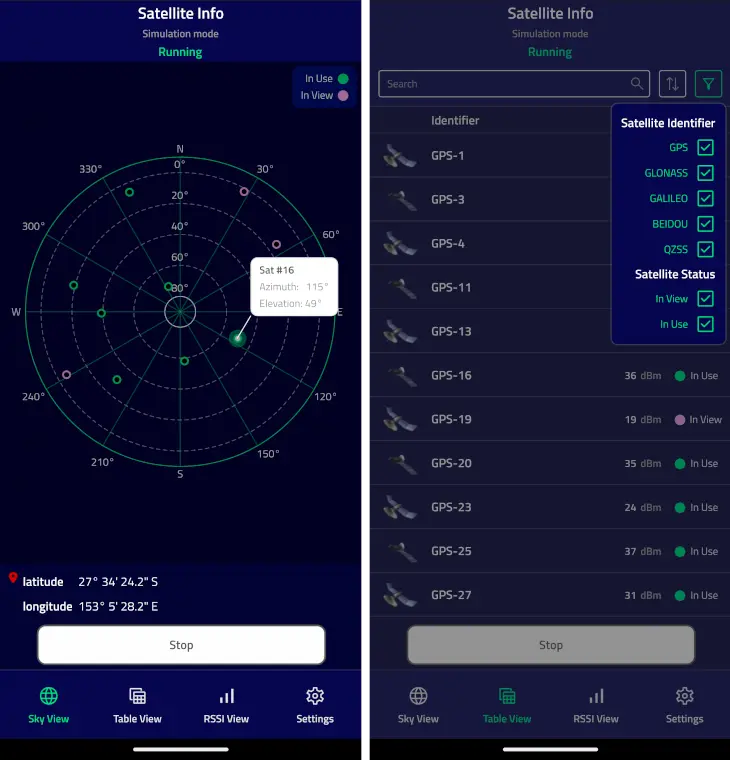
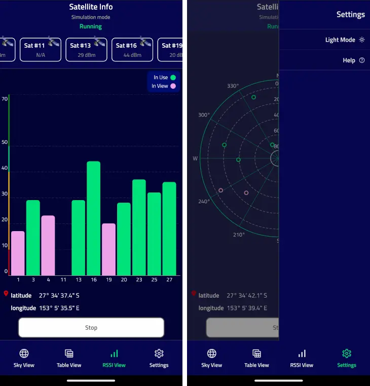

SatelliteInfo (C++/QML)
The SatelliteInfo example shows the available satellites using Sky View, Table View, or RSSI View and the user's current position.
This example demonstrates the usage of Qt Positioning QML API:
The example also shows how to use a custom C++ model together with a custom proxy model from QML.
UI Overview
The example shows satellite information in three different tabs. The data is taken from the SatelliteSource::satellitesInView and SatelliteSource::satellitesInUse properties.

The Sky View tab shows the relative satellite positions using the Azimuth and Elevation attributes. Clicking on an individual satellite object opens a popup with the satellite identifier, its azimuth and elevation.
The Table View tab shows the list of all detected satellites, and allows to apply sorting and filtering to the list.

The RSSI View tab shows the signal strength of satellites in view using the signalStrength property. The numbers below the bars represent the individual satellite identifiers.
The Sky View and RSSI View tabs also show the current latitude and longitude. They use PositionSource::position property to extract this information.
The Status block on top of the tabs shows the current mode or the last error.
The Settings menu allows to switch the application color mode and show the help information.
The application operates in three different modes:
| Application mode | Description |
|---|---|
| Running | The application continuously queries the system for satellite and position updates. When new data is available it will be displayed. |
| Stopped | The application stops updating the satellite and position information. |
| Single | The application makes a single satellite and position update request. |
The application automatically switches into a simulation mode if the platform does not provide satellite or position information. The simulation mode uses an NMEA plugin with pre-recorded NMEA data.
Note: Apple does not provide any APIs to retrieve satellite information, so on macOS and iOS the satellite information will always be taken from pre-recorded data. These API limitations do not affect positioning information, so current position can be displayed correctly.
Running the Example
To run the example from Qt Creator, open the Welcome mode and select the example from Examples. For more information, visit Building and Running an Example.
Retrieving Current Position
The current position is retrieved from the PositionSource QML object. The onPositionChanged handler is used to receive position updates. The string representations of latitude and longitude are extracted from the coordinate property.
PositionSource { id: positionSource name: root.simulation ? "nmea" : "" onPositionChanged: { let posData = position.coordinate.toString().split(", ") positionBox.latitudeString = posData[0] positionBox.longitudeString = posData[1] } }
Retrieving Satellite Information
Similarly to the position, the current satellite information is retrieved from the SatelliteSource QML object. The onSatellitesInViewChanged and onSatellitesInUseChanged handlers are used to get the updated satellites in view and satellites in use respectively. In this example, the data is then forwarded to the C++ model, which is later used in all views.
SatelliteSource { id: satelliteSource name: root.simulation ? "nmea" : "" onSatellitesInViewChanged: root.satellitesModel.updateSatellitesInView(satellitesInView) onSatellitesInUseChanged: root.satellitesModel.updateSatellitesInUse(satellitesInUse) }
Note: The example shows both the QML Positioning API, and the integration of C++ model to QML. That is the reason why the satellite information is first retrieved in QML, then forwarded to C++, and then back to QML to be used in the model. In practice, if the application is supposed to use complex C++ models, consider directly using the QGeoSatelliteInfoSource class from C++.
Using Custom C++ Models
The example makes use of two custom models - SatelliteModel and SortFilterModel.
Satellite Model
The SatelliteModel class is derived from QAbstractListModel and reimplements the rowCount(), data(), and roleNames() methods to represent the satellite information. Using QAbstractListModel as a base class allows to easily use the model with the QML ListView and Repeater types. A custom size property is used only in the RSSI View tab to dynamically calculate the width of the tab bars.
class SatelliteModel : public QAbstractListModel { Q_OBJECT Q_PROPERTY(int size READ rowCount NOTIFY sizeChanged) QML_ELEMENT public: explicit SatelliteModel(QObject *parent = nullptr); int rowCount(const QModelIndex &parent = QModelIndex()) const override; QVariant data(const QModelIndex &index, int role = Qt::DisplayRole) const override; QHash<int, QByteArray> roleNames() const override; public slots: void updateSatellitesInView(const QList<QGeoSatelliteInfo> &inView); void updateSatellitesInUse(const QList<QGeoSatelliteInfo> &inUse); signals: void sizeChanged(); };
The roleNames() method is used to map the model's roles to the property names which can be used to access the model data from QML. For example, the id name is used to extract the satellite identifier, and the rssi name is used to get the signal strength.
QHash<int, QByteArray> SatelliteModel::roleNames() const { return { {Roles::IdRole, "id"}, {Roles::RssiRole, "rssi"}, {Roles::AzimuthRole, "azimuth"}, {Roles::ElevationRole, "elevation"}, {Roles::SystemRole, "system"}, {Roles::SystemIdRole, "systemId"}, {Roles::InUseRole, "inUse"}, {Roles::VisibleNameRole, "name"} }; }
On the QML side, we can use these names to get the actual values. For example, the implementation of RSSI View uses the rssi, inUse, and id role names to draw the bars that represent individual satellites:
Repeater { id: repeater model: root.satellitesModel delegate: Rectangle { required property var modelData height: rect.height width: view.singleWidth color: "transparent" SemiRoundedRectangle { anchors.bottom: satId.top width: parent.width height: (parent.height - satId.height) * Math.min(parent.modelData.rssi, rect.maxVisibleLevel) / rect.maxVisibleLevel color: parent.modelData.inUse ? root.inUseColor : root.inViewColor } Text { id: satId anchors.horizontalCenter: parent.horizontalCenter anchors.bottom: parent.bottom text: parent.modelData.id color: Theme.textSecondaryColor font.pixelSize: Theme.smallFontSize font.weight: Theme.fontLightWeight } } }
Proxy Model
The SortFilterModel class is used to provide custom sorting and filtering of the satellite objects shown in the Table View tab.
The model is derived from QSortFilterProxyModel and reimplements the filterAcceptsRow() and lessThan() methods to provide filtering and sorting. The model also exposes several slots to tune the filtering and sorting behavior.
class SortFilterModel : public QSortFilterProxyModel { Q_OBJECT QML_ELEMENT public: explicit SortFilterModel(QObject *parent = nullptr); public slots: void updateFilterString(const QString &str); void updateShowInView(bool show); void updateShowInUse(bool show); void updateSelectedSystems(int id, bool show); void updateSortRoles(int role, bool use); protected: bool filterAcceptsRow(int row, const QModelIndex &parent) const override; bool lessThan(const QModelIndex &left, const QModelIndex &right) const override; };
These slots can be called from both C++ and QML. For example, the Satellite Identifier delegate uses the updateSelectedSystems() slot to show or hide the information about satellites belonging to certain satellite systems. Likewise, the Satellite Status delegates use the updateShowInView() and updateShowInUse() slots to filter the satellites with a specific status.
Repeater { model: root.satelliteSystemModel delegate: CheckElement { required property var modelData text: modelData.name Layout.alignment: Qt.AlignRight onCheckedChanged: { root.sortFilterModel.updateSelectedSystems(modelData.id, checked) } } } ... CheckElement { text: qsTr("In View") Layout.alignment: Qt.AlignRight onCheckedChanged: root.sortFilterModel.updateShowInView(checked) } CheckElement { text: qsTr("In Use") Layout.alignment: Qt.AlignRight onCheckedChanged: root.sortFilterModel.updateShowInUse(checked) }
QML Module Registration
CMake Build
For a CMake-based build, we need to add the following to the CMakeLists.txt:
qt_add_qml_module(satelliteinfo
URI SatelliteInformation
VERSION 1.0
SOURCES
roles.h
satellitemodel.cpp satellitemodel.h
sortfiltermodel.cpp sortfiltermodel.h
QML_FILES
ApplicationScreen.qml
Button.qml
Header.qml
HelpPopup.qml
LegendBox.qml
Main.qml
RssiView.qml
PageButton.qml
PermissionsScreen.qml
PositionBox.qml
SatelliteView.qml
SettingsView.qml
SkyView.qml
Theme.qml
ViewSwitch.qml
RESOURCES
icons/checkbox.svg
icons/checkbox_blank.svg
icons/darkmode.svg
icons/filter.svg
icons/help.svg
icons/lightmode.svg
icons/place.svg
icons/qtlogo_green.png
icons/qtlogo_white.png
icons/rssiview.svg
icons/satellite_small.png
icons/satellite1.png
icons/satellite2.png
icons/search.svg
icons/settings.svg
icons/skyview.svg
icons/sort.svg
icons/tableview.svg
)
qmake Build
For a qmake build, we need to modify the satelliteinfo.pro file in the following way:
CONFIG += qmltypes
QML_IMPORT_NAME = SatelliteInformation
QML_IMPORT_MAJOR_VERSION = 1
qml_resources.files = \
qmldir \
ApplicationScreen.qml \
Button.qml \
Header.qml \
HelpPopup.qml \
LegendBox.qml \
Main.qml \
RssiView.qml \
PageButton.qml \
PermissionsScreen.qml \
PositionBox.qml \
SatelliteView.qml \
SettingsView.qml \
SkyView.qml \
Theme.qml \
ViewSwitch.qml
qml_resources.prefix = /qt/qml/SatelliteInformation
RESOURCES += qml_resources
icon_resources.files = \
icons/checkbox.svg \
icons/checkbox_blank.svg \
icons/darkmode.svg \
icons/filter.svg \
icons/help.svg \
icons/lightmode.svg \
icons/place.svg \
icons/qtlogo_green.png \
icons/qtlogo_white.png \
icons/rssiview.svg \
icons/satellite_small.png \
icons/satellite1.png \
icons/satellite2.png \
icons/search.svg \
icons/settings.svg \
icons/skyview.svg \
icons/sort.svg \
icons/tableview.svg
icon_resources.prefix = /qt/qml/SatelliteInformation
RESOURCES += icon_resources